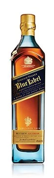
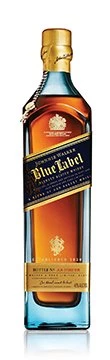

Johnnie
Walker

JOHNNIE WALKER COLOURS

 



LIMITED EDITIONS

JOHN WALKER & SONS


Preparaciones y cocteles con Whiskey
Nuestros cocteles mas populares
Johnnie Ginger
Johnnie Walker Red y Arándanos
Johnnie Walker Black & Soda
CONDICIONES DE USO AVISO SOBRE PRIVACIDAD Y COOKIES UGC POLICY DECLARACIÓN DE ACCESIBILIDAD PRIVACY SETTINGS DRINKAWARE.CO.UKDRINKIQTHEBAR.COM THE JOHNNIE WALKER, JOHNNIE WALKER HOUSE, JOHN WALKER & SONS, RED LABEL, BLACK LABEL, DOUBLE BLACK, GOLD LABEL RESERVE, PLATINUM LABEL, BLUE LABEL, XR, KING GEORGE V, JOHN WALKER & SONS ODYSSEY, THE JOHN WALKER, DIAMOND JUBILEE, THE ADVENTURER, THE SPICE ROAD, THE GOLD ROUTE AND THE ROYAL ROUTE WORDS, THE STRIDING FIGURE DEVICE AND ASSOCIATED LOGOS, JOY WILL TAKE YOU FURTHER ARE TRADEMARKS. © JOHN WALKER & SONS 2015. THE EXPLORERS CLUB FLAG AND ASSOCIATED LOGOS ARE TRADEMARKS OF THE EXPLORERS CLUB, A GLOBAL NON-PROFIT ORGANIZATION HEAD QUARTERED IN NEW YORK CITY."" JOHN WALKER & SONS 2016 PLEASE DO NOT SHARE WITH ANYONE UNDER THE LEGAL PURCHASE AGE FOR ALCOHOL.DRINK RESPONSIBLY.